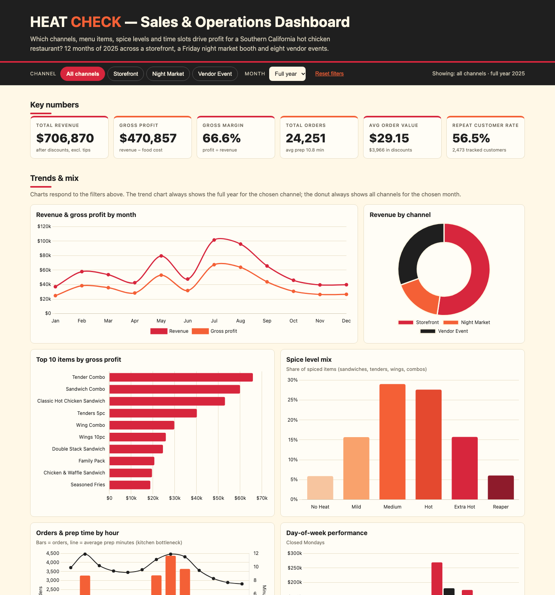

Heat Check
01SQL, Python, Excel, Chart.js
A restaurant operations study: 24K+ synthetic orders, 15 business questions, and a closer look at staffing, channels, and menu performance.
All sales data is fictional. Recommendations describe a simulated business, not realized results.